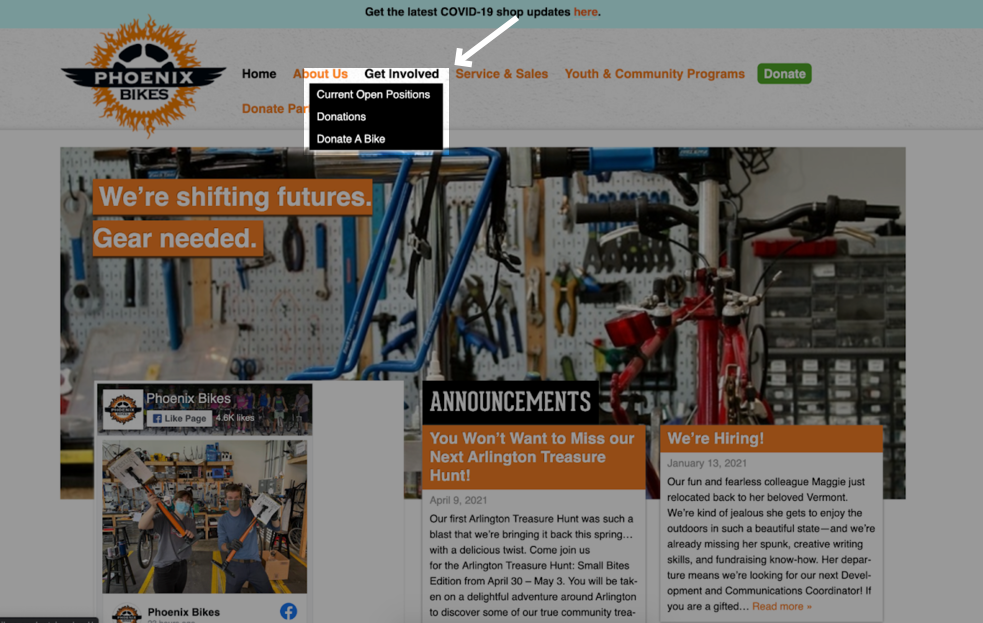
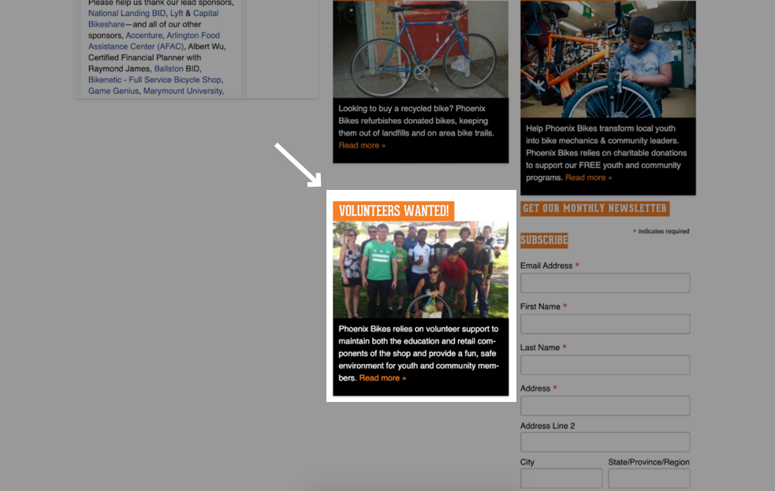
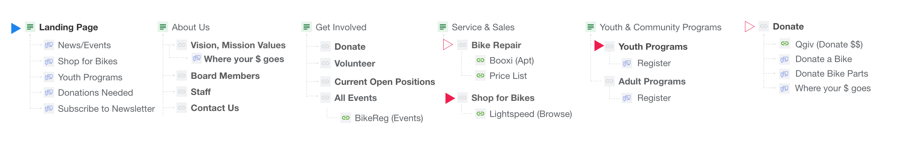
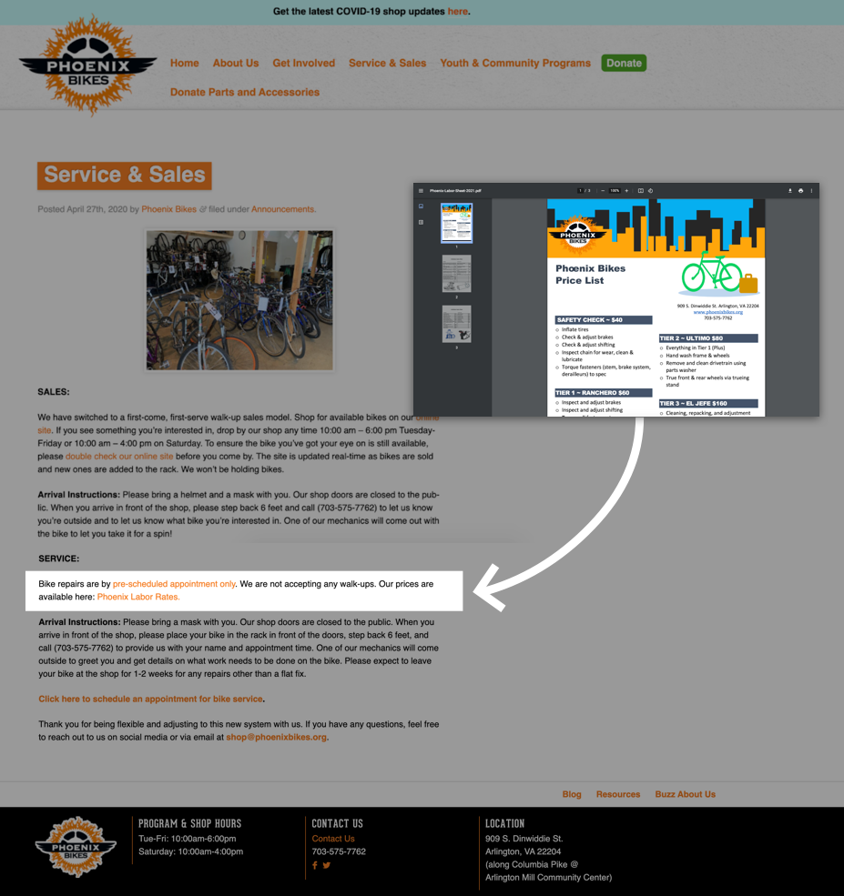
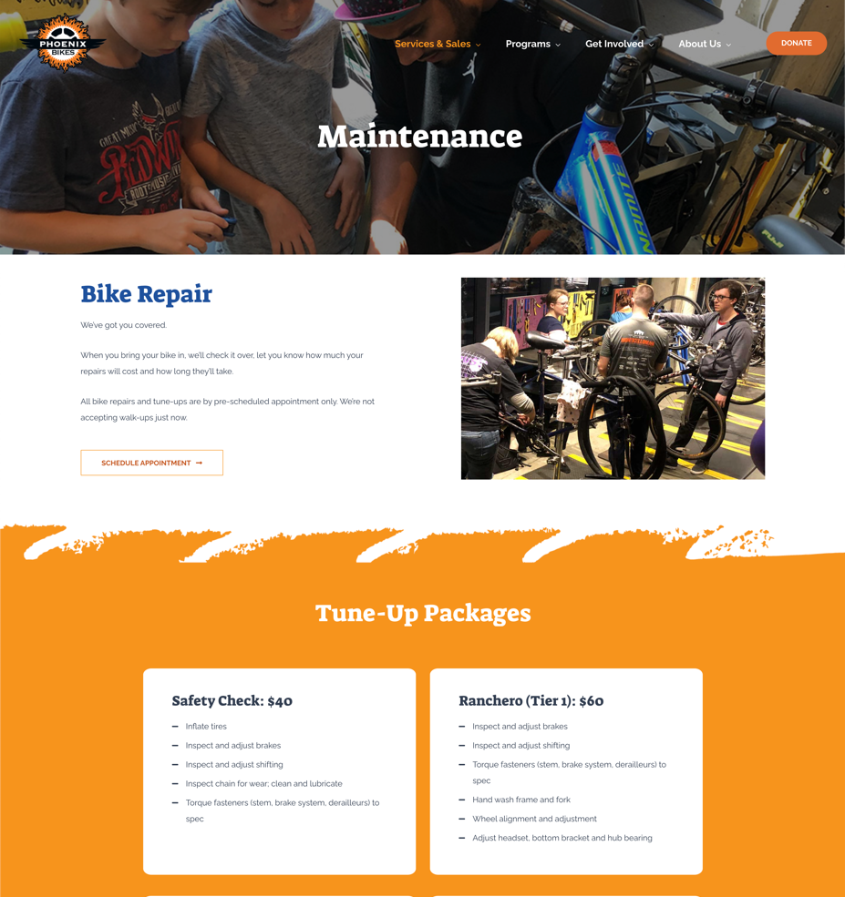
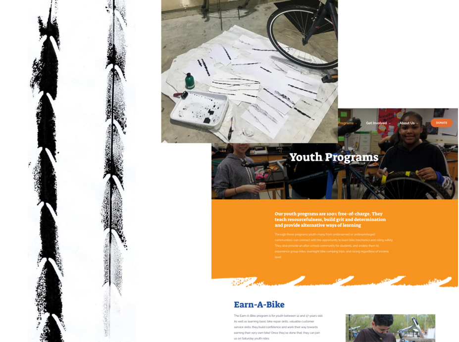
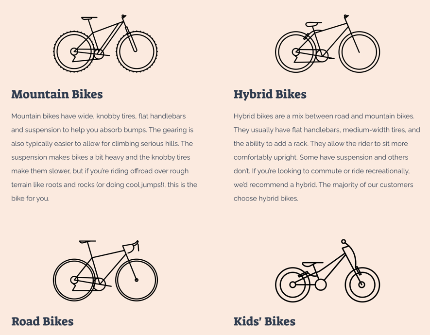
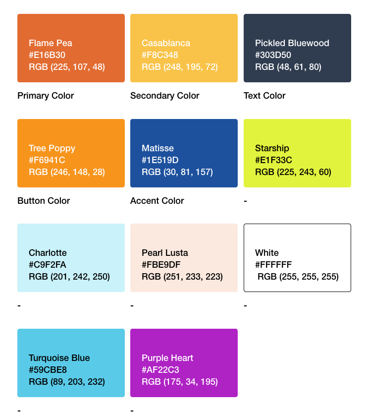
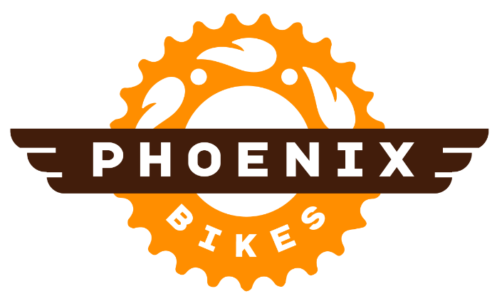

Phoenix Bikes
CreateAthon is a 24-hour creative marathon event where teams help local DC non-profits with design and brand strategy. I participated in 2021 as a UX Designer and was part of a fantastic team with Kate, Gary, Toni-Lee, Jasper, and Dawn. We worked with with Phoenix Bikes, a community bike shop that runs youth education programs to teach kids how to build and maintain bikes (and they get to keep the bike at the end!)
Read on to see how we managed to restructure, redesign and implement an entire new site on Wordpress, uplift the mission through a complete content overhaul, and liven the brand with a new logo and youthful colors and icons... all in 24 hours!
Check out the site
Problem
Phoenix Bikes' main problems with their existing website were the poor user experience, the lack of communicating the mission, and the outdated site styling. The poor user experience stood out to us - I was talking to a friend about this project the evening before CreateAthon, and she mentioned that she had actually tried to volunteer for Phoenix Bikes but gave up after being unable to find the volunteer form!
After hearing this, I went on a hunt for the volunteer page and had a lot of trouble as well.
Expected Location of Sign-Up Form

I expected the volunteer page to be under "Get Involved"
Actual Location

Turns out, it was hidden under the fold on the home page! Not good for SEO!
But first, Site Architecture
The first thing we did was focus on a new site architecture -- volunteers should have no problem finding the sign-up page! We also used this exercise as a way to "categorize" pages by "which pages might have similar structure" so that we could reuse as many page layouts as possible.

Good UX Means "Content First"
This is the first time I've worked closely with a content writer and my my was it a marvelous experience. Dawn introduced us to her process where she would first write the all content, and we would those documents as a roadmap for creating mock-ups. This was particularly important because communication with customers is key for Phoenix Bikes. Instead of us creating mockups and Dawn having to cater content to fit space constraints, we put content first and let the words shine.
Former Services & Sales Page

The existing location of services information was not very discoverable -- users had to click a text link to open a PDF.
Updated Maintenance Page

Dawn wrote a beautiful copy and sorted content in a way that would guide the customer through the user journey. The new Maintenance page features scheduling and repair information front and center.
A Sum that's greater than its Parts
Each person on our team came in with a different background. Some of us loved branding, some like myself had strictly enterprise software experience while other work independently with clients. We managed to fuse our different specializations and interests in a way that allowed us to parallelize tasks (to get things done on a tight schedule) and build on each others' strengths (to create a better product together).
This involved quickly delegating parts. Gary, who had experience with Wordpress, set up the site. Kate and Dawn took a lead on UX designs and content while Gary and I implemented the mock-ups on Wordpress and focused on UI. Simultaneously, Toni-Lee and Jasper came up with a "modern yet scrappy" visual language and incorporated creative elements of delight.

Toni-Lee created custom bike tire patterns by running her bike through ink, scanning the images, and turning them into SVGs -- we used the patterns as section dividers on pages

Custom bike icons for the "Buy a Bike" page -- in our update, we added a section that would guide customers through the different types of available bikes

Jasper's refreshed color palette -- we kept orange as the primary color since it is core to Phoenix Bikes' identity, but we also added modern and young colors to add more spunk to the site

My updated logo design -- Phoenix Bikes didn't end up adopting our new logo, but we're proud of it regardless!
Previous Project
Trailhead
Next Project
Meexarps